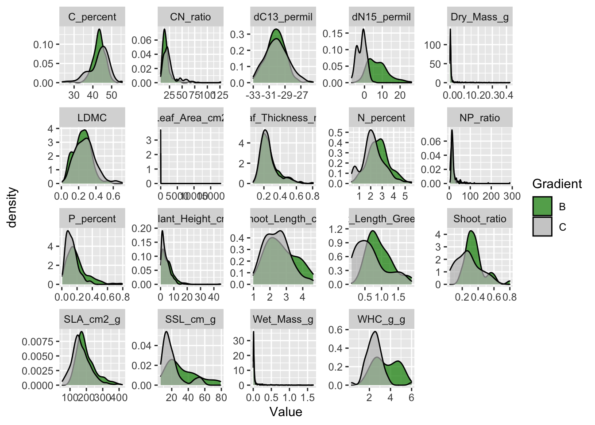
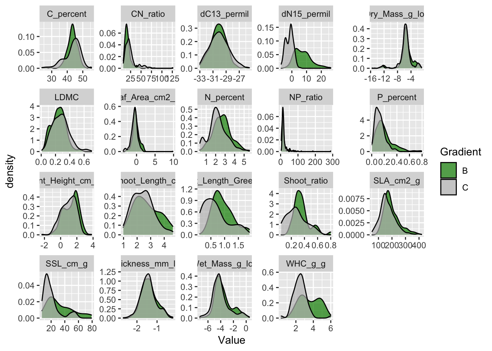

8 Data curation
Data curation, transformation or cleaning is the first step after digitizing the data. Each dataset has to be checked for errors and corrected as best as possible. This tutorial shows how to check your dataset for errors and how to correct them.
For this tutorial we will be working with the trait dataset from Svalbard. See chapter Chapter 5 for how to access the data and information about the study, experiment and datasets.
8.1 Useful packages
There are a couple of R packages that are useful for this work. First, tidyverse is a collection of R packages used for basic data manipulation and analysis.
If you have never used the packages you need to install it first using the function install.packages("tidyverse"). Otherwise, you can just load the packages.
Second, another useful package for data curation is tidylog, which is built on the dplyr and tidyr packages and provides useful information about the functions used.
Tidylog will for example tell you how many rows have been removed and are remaining when using the filter() function or how many rows match when using a join function. The information is always indicated in absolute numbers and percentage. The additional information is very useful to check if the right observations have been removed or manipulated, because mistakes are easily done.
Let’s install and/or load tidylog.
Note, that once tidylog is loaded it will automatically prioritize the tidylog function before the dplyr and tidyr functions. You actively have to choose if you do not want to use the tidylog version by using this notation: dplyr::filter().
8.2 Import data
The first step is to import the data to R. The data is stored as a csv file and we can use the function read_csv() to import that data. If your data has another format or importing data is new to, you have a look at this page.
raw_traits <- read_csv("data/PFTC4_Svalbard_2018_Gradient_Traits.csv")
#> Rows: 11345 Columns: 15
#> ── Column specification ────────────────────────────────────────────────────────
#> Delimiter: ","
#> chr (7): Project, Gradient, PlotID, ID, Functional_group, Taxon, Trait
#> dbl (7): Year, Site, Individual_nr, Value, Elevation_m, Latitude_N, Longitu...
#> date (1): Date
#>
#> ℹ Use `spec()` to retrieve the full column specification for this data.
#> ℹ Specify the column types or set `show_col_types = FALSE` to quiet this message.Give the dataset a name that indicates that this is the raw data.
The dataset contains measurements of 14 traits from two elevational gradients on Svalbard. The traits were measured on individual plants from 21 different graminoid and forb species. For more information about the sites, traits and measurements see here.
Some manipulation
Let us introduce some errors to the dataset.
The code to do this is hidden. But if you want to replicate the code to introduce errors you can find the code here.
8.3 First check of the dataset
By typing raw_traits in the console it will display the first rows and columns of the dataset.
raw_traits
#> # A tibble: 11,346 × 12
#> Date Gradient Site PlotID Individual_nr ID Taxon Trait Value
#> <chr> <chr> <dbl> <chr> <dbl> <chr> <chr> <chr> <dbl>
#> 1 2018-07-20 B 5 D 1 AIB1395 saxifra… Plan… 6.5 e+0
#> 2 2018-07-20 B 5 D 1 AIB1395 saxifra… Wet_… 2.92e-2
#> 3 2018-07-20 B 5 D 1 AIB1395 saxifra… Dry_… 4 e-3
#> 4 2018-07-20 B 5 D 1 AIB1395 saxifra… Leaf… 5.66e-1
#> 5 2018-07-20 B 5 D 1 AIB1395 saxifra… Leaf… 6.75e-1
#> 6 2018-07-20 B 5 D 1 AIB1395 saxifra… SLA_… 1.69e+2
#> 7 2018-07-20 B 5 D 1 AIB1395 saxifra… LDMC 1.37e-1
#> 8 2018-07-20 B 5 D 1 AIB1395 saxifra… C_pe… 3.89e+1
#> 9 2018-07-20 B 5 D 1 AIB1395 saxifra… N_pe… 1.14e+0
#> 10 2018-07-20 B 5 D 1 AIB1395 saxifra… CN_r… 3.41e+1
#> # … with 11,336 more rows, and 3 more variables: Elevation_m <dbl>,
#> # Latitude_N <dbl>, Longitude_E <dbl>At the top you can see that the dataset has 11346 observations and 12 columns. These numbers give you a first impression if you have imported the right file, and if all your observations and columns are there.
8.3.1 Check the data type
The next thing to check is if the variables have the right data type (or class in R terminology). For each variable the output indicates the data type. The most common types are dbl (numeric or integer), chr (character), or date (date).
If you want to know more about data types see here.
Now we want to check if the variables have the right data type. The first variable Date is a character, which is not correct. This probably means that one or several observations have a wrong date. Let us check all different values for the variable Date. For this we can use the function distinct() on the variable Date.
raw_traits |>
distinct(Date)
#> distinct: removed 11,338 rows (>99%), 8 rows remaining
#> # A tibble: 8 × 1
#> Date
#> <chr>
#> 1 2018-07-20
#> 2 2018-07-18
#> 3 2018-07-21
#> 4 2018-07-24
#> 5 2018-07-19
#> 6 2018-07-17
#> 7 18
#> 8 <NA>We can see that there are 6 distinct dates in this variable. One of the dates is “18”, which is not a correct date format and turned the variable into a character. Note that the additional information from the tidylog package about the distinct() function. It shows the number of rows removed and remaining.
The next step is to check where the problem occurred. For this we can use the function filter() to extract all observations with the date 18. We can use as.data.frame() to display the whole table.
#> filter: removed 11,339 rows (>99%), 7 rows remaining
#> # A tibble: 7 × 12
#> Date Gradient Site PlotID Individual_nr ID Taxon Trait Value
#> <chr> <chr> <dbl> <chr> <dbl> <chr> <chr> <chr> <dbl>
#> 1 18 C 1 A 3 AMO3822 salix polaris Plant… 1.1 e+0
#> 2 18 C 1 A 3 AMO3822 salix polaris Wet_M… 5.76e-3
#> 3 18 C 1 A 3 AMO3822 salix polaris Dry_M… 2 e-3
#> 4 18 C 1 A 3 AMO3822 salix polaris Leaf_… 1.88e-1
#> 5 18 C 1 A 3 AMO3822 salix polaris Leaf_… 2.84e-1
#> 6 18 C 1 A 3 AMO3822 salix polaris SLA_c… 1.42e+2
#> 7 18 C 1 A 3 AMO3822 salix polaris LDMC 3.47e-1
#> # … with 3 more variables: Elevation_m <dbl>, Latitude_N <dbl>,
#> # Longitude_E <dbl>We see that it is a single observation (with multiple traits) that has the wrong date. The next step is to check the raw data, notes, photos, etc. to find the correct date for this observations. It is important to keep the data entry sheets, take a photo of them and keep the field notes to be able to fix such problems.
#knitr::include_graphics("images/resource/...")Since the value for date is 18, we will assume now that this was a typo and that the correct date is 2018-07-18. Let’s replace this value and give the variable the right class.
For this we will use the function mutate() which adds or manipulates a column. Inside the mutate we will use the case_when() function to replace the date for a specific ID. We are using the function with a single statement, however this is a powerful function that allow for multiple statements (many if else conditions). To give the variable the correct class, we use the ymd() function from the lubridate package. Note that we now have to assign the table to a new or the same name to make the change permanent.
An important step when cleaning data is to check that you have done the right thing. The tidylog functions show that for 7 observation Date has been changed. This matches with the number of observations that had a wrong date.
To be sure we can look at the specific leaf (ID == “AMO3822”) and see if the date is now corrected. Another way would be to run the distinct(Date) function again.
raw_traits |>
filter(ID == "AMO3822") |>
select(Date)
#> filter: removed 11,339 rows (>99%), 7 rows remaining
#> select: dropped 11 variables (Gradient, Site, PlotID, Individual_nr, ID, …)
#> # A tibble: 7 × 1
#> Date
#> <date>
#> 1 2018-07-18
#> 2 2018-07-18
#> 3 2018-07-18
#> 4 2018-07-18
#> 5 2018-07-18
#> 6 2018-07-18
#> 7 2018-07-18The date has been fixed.
Exercise
Now it is your turn. Check if the data type for the variable Date is now correct.
Hint
- type
raw_traitsto look at the whole dataset where the datatype of each variable is indicated - use
class(raw_traits$Date)which will tell you directly what type of class the variable has - use
map(raw_traits, class)to get the class of all variable in the dataframe
8.4 Check for duplicates
Another common problem is duplicate observations. This can happen when data is entered twice. The why to find duplicates is to check that the combination of variables are unique. In our dataset, we expect that Date, Gradient, Site, PlotID, Individual_nr, ID, Taxon and Trait should be unique, and only occurring once.
To check this, we can group_by() these variables and filter() for observations that occur more than once.
raw_traits |>
group_by(Date, Gradient, Site, PlotID, Individual_nr, ID, Taxon, Trait) |>
filter(n() > 1)
#> group_by: 8 grouping variables (Date, Gradient, Site, PlotID, Individual_nr, …)
#> filter (grouped): removed 11,344 rows (>99%), 2 rows remaining
#> # A tibble: 2 × 12
#> # Groups: Date, Gradient, Site, PlotID, Individual_nr, ID, Taxon, Trait [1]
#> Date Gradient Site PlotID Individual_nr ID Taxon Trait Value
#> <date> <chr> <dbl> <chr> <dbl> <chr> <chr> <chr> <dbl>
#> 1 2018-07-20 B 3 C 3 BEK3638 salix po… Dry_… 0.00275
#> 2 2018-07-20 B 3 C 3 BEK3638 salix po… Dry_… 0.00275
#> # … with 3 more variables: Elevation_m <dbl>, Latitude_N <dbl>,
#> # Longitude_E <dbl>There is one duplicate entry.
Note that Value was not included in the group_by(). This was done intentionally, because a common mistake is to have a duplicate, but with a different value. This is either because one of the variables is wrong, e.g. it has the wrong Site and therefore appears to be a duplicate. Alternatively, the leaf could have been measured twice by accident, which would likely give two slightly different values. When getting a duplicate, these different options for why there is a duplicate have to be considered and carefully checked in the raw data.
In this case, we will assume that the leaf has only been measured once, but the data has been entered twice. Thus, the two entries are exact duplicates.
To fix the duplicate problem, we group by the variables we expect to be unique. Then we use distinct() with the argument .keep_all = TRUE to remove the duplicates.
Tidylog allows us to see what happens and how many rows have been removed. There are 8 grouping variables and as expected, one row is filtered away, which is the duplicated row.
We can also run the code from above again to check if the duplicate is gone.
8.5 Check for missing data
A common problem in a dataset are missing values.
How to detect missing values…
Once the missing values are detected one has to decide if the missing data can be recovered, or if the missing values should be removed from the dataset.
raw_traits <- raw_traits |>
drop_na(Value)
#> drop_na: removed 3 rows (<1%), 11,343 rows remainingThis operation has removed 3 rows, which is the number of NA’s in the dataset.
8.5.1 Check values within variables
raw_traits |>
distinct(Taxon) |>
arrange(Taxon) |>
print(n = Inf)
#> distinct: removed 11,299 rows (>99%), 44 rows remaining
#> # A tibble: 44 × 1
#> Taxon
#> <chr>
#> 1 alopecurus ovatus
#> 2 aulacomnium turgidum
#> 3 bistorta vivipara
#> 4 calamagrostis neglecta
#> 5 cassiope tetragona
#> 6 cerastium arcticum
#> 7 dicranum sp
#> 8 draba arctica
#> 9 draba oxycarpa
#> 10 dryas octopetala
#> 11 equisetum arvense
#> 12 equisetum scirpoides
#> 13 festuca rubra
#> 14 festuca viviparoidea
#> 15 hylocomium splendens
#> 16 luzula confusa
#> 17 luzula nivalis
#> 18 micranthes hieraciifolia
#> 19 micranthes nivalis
#> 20 niphotrichum canescens
#> 21 niphotrichum sp
#> 22 oxiria digyna
#> 23 oxyra digyna
#> 24 oxyria digina
#> 25 oxyria digyna
#> 26 pedicularis hirsuta
#> 27 poa alpina
#> 28 poa arctica
#> 29 poa pratensis
#> 30 polytrichum piliferum
#> 31 polytrichum sp
#> 32 potentilla hyparctica
#> 33 ranunculus sulphureus
#> 34 salix polaris
#> 35 sanionia sp
#> 36 saxifraga cernua
#> 37 saxifraga cespitosa
#> 38 saxifraga hirculus
#> 39 saxifraga oppositifolia
#> 40 silene acaulis
#> 41 stellaria longipes
#> 42 syntrichia ruralis
#> 43 tomentypnum nitens
#> 44 trisetum spicatum4 different versions of oxyra digyna! rename alternative would be to use a dictionary.
8.6 Visualise data
Some errors and problems in the data are difficult to detect. Checking if the measurements are realistic is nearly impossible by looking at a dataframe. For this, visualising the data is much more effective.
Make histograms, this shows the range of the values
raw_traits |>
ggplot(aes(x = Value, fill = Gradient)) +
geom_density(alpha = 0.7) +
scale_fill_manual(values = c("green4", "grey")) +
facet_wrap(~ Trait, scales = "free")
Note that the size traits (height, mass, area and thickness) have very long tails. It is common to log transform such variables to better see the full range of the variables.
Leaf area has a huge tail and goes up to almost 20’000 cm2. This would be a leaf of almost 2 m2, which is nearly impossible. This value needs to be checked, it could be a typo.
Let’s log transform the size traits.
raw_traits <- raw_traits |>
mutate(Value = if_else(Trait %in% c(
"Plant_Height_cm",
"Wet_Mass_g",
"Dry_Mass_g",
"Leaf_Area_cm2",
"Leaf_Thickness_mm"), log(Value), Value),
Trait = recode(Trait,
"Plant_Height_cm" = "Plant_Height_cm_log",
"Wet_Mass_g" = "Wet_Mass_g_log",
"Dry_Mass_g" = "Dry_Mass_g_log",
"Leaf_Area_cm2" = "Leaf_Area_cm2_log",
"Leaf_Thickness_mm" = "Thickness_mm_log"))
#> Warning in log(Value): NaNs produced
#> mutate: changed 5,428 values (48%) of 'Trait' (0 new NA)
#> changed 5,428 values (48%) of 'Value' (0 new NA)And make plot again.
raw_traits |>
ggplot(aes(x = Value, fill = Gradient)) +
geom_density(alpha = 0.7) +
scale_fill_manual(values = c("green4", "grey")) +
facet_wrap(~ Trait, scales = "free")
The size traits are now easier to read.
Another way to check the data is to plot correlated values against each other. In this dataset, we can plot dry mass against leaf area. We would expect a positive correlation between the two variables, where large leaves have a higher dry mass.
raw_traits |>
pivot_wider(names_from = Trait, values_from = Value) |>
ggplot(aes(x = Dry_Mass_g_log, y = Leaf_Area_cm2_log)) +
geom_point()